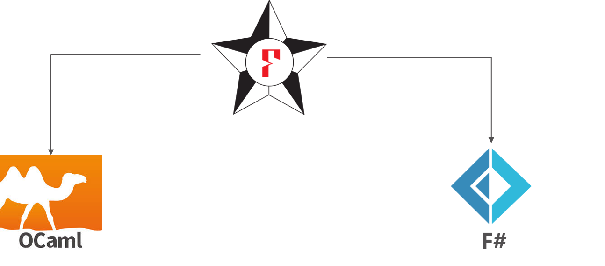
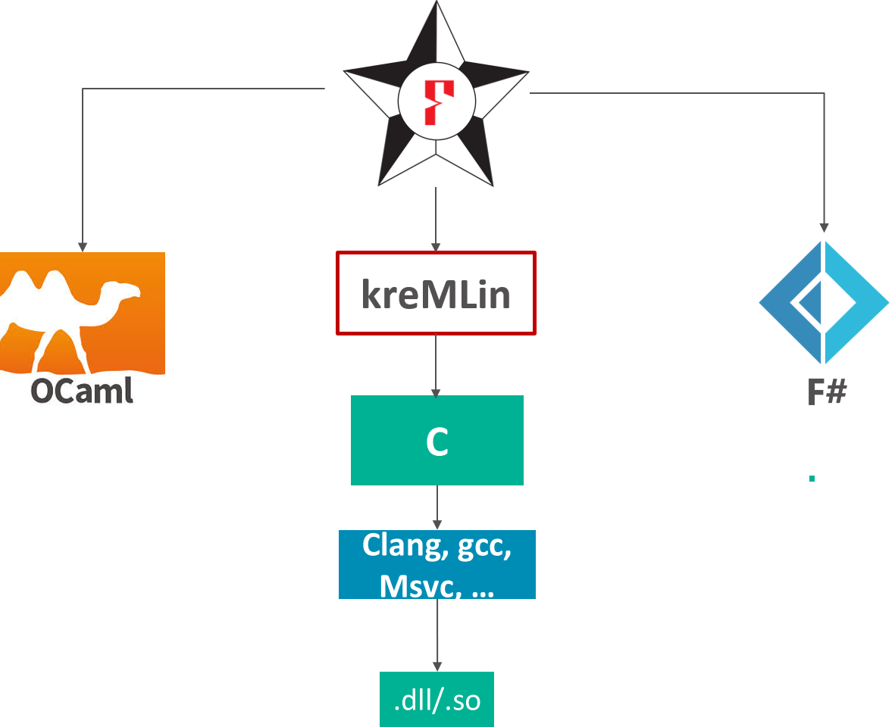

Programming and Proving in F* and Low*

Program verification: Shall the twain ever meet?
| Interactive proof assistants | Semi-automated verifiers of imperative programs | |||
|---|---|---|---|---|
| Coq, | CompCert, | air | Dafny, | Verve, |
| Isabelle, | seL4, | FramaC, | IronClad, | |
| Agda, | Bedrock, | Why3 | miTLS | |
| Lean, PVS, … | 4 colors | gap | Vale | |
-
In the left corner: Very expressive dependently-typed logics,
but only purely functional programming -
In the right: effectful programming, SMT-based automation,
but only first-order logic
Bridging the gap: F*
-
Functional programming language with effects
- like OCaml, F#, Haskell, …
- F* extracted to OCaml or F# by default
- Subset of F* compiled to efficient C code
-
Semi-automated verification system using SMT
- like Dafny, FramaC, Why3, …
-
With an expressive core language based on dependent type theory
- like Coq, Lean, Agda, PVS, …
-
New: A metaprogramming and tactic framework for interactive proof and user-defined automation
- like Coq, Isabelle, Lean, PVS, etc.
Some uses of F*
-
Functional programming language with effects
- F* is programmed in F* and extracted to OCaml, but not (yet) verified
-
Semi-automated verification system
- Project Everest: verify and deploy new, efficient HTTPS stack
-
Proof assistant based on dependent types and metaprogramming
- Semantics and proofs by partial evaluation in Vale
- Core verification libraries, e.g., for math, state, parsing, formatting
- Mechanized metatheory, e.g,
- MicroFStar: Fragment of F* formalized in F*
- Wys*: Verified DSL for secure multi-party computations
- ReVer: Verified compiler to reversible circuits
A first taste
-
Write ML-like code
let rec factorial n = if n = 0 then 1 else n * factorial (n - 1) -
Give it a specification, claiming that
factorialis a total function from non-negative to positive integers.val factorial: n:int{n >= 0} -> Tot (i:int{i >= 1}) -
Ask F* to check it
fstar factorial.fst Verified module: Factorial All verification conditions discharged successfully
Running F* Programs
Extraction to OCaml and FSharp

Running F* Programs
Extraction to OCaml and FSharp
Extraction of a subset of F* to C

The Current Everest and F* team
Microsoft Research, Inria Paris, CMU, MIT, Rosario, …
|
|
- many former members, interns, external contributors, … you?
The rest of this lecture
Today
-
The functional core of F*
-
Several style of proof illustrated on simple functional programs
-
Simple verified stateful programming
-
A taste of F*'s encoding to SMT
Tomorrow
- Verified low-level programming in a C-like subset of F*
The functional core of F*
-
Recursive functions
val factorial : int -> int let rec factorial n = (if n = 0 then 1 else n * (factorial (n - 1))) -
Inductive datatypes (immutable) and pattern matching
type list (a:Type) = | Nil : list a | Cons : hd:a -> tl:list a -> list a val map : ('a -> 'b) -> list 'a -> list 'b let rec map f x = match x with | [] -> [] | h :: t -> f h :: map f t -
Lambdas (unnamed, first-class functions)
map (fun x -> x + 42) [1;2;3]
Refinement types
type nat = x:int{x>=0}-
Refinements introduced by type annotations (code unchanged)
val factorial : nat -> nat let rec factorial n = (if n = 0 then 1 else n * (factorial (n - 1))) -
Logical obligations discharged by SMT (simplified)
n >= 0, n <> 0 |= n - 1 >= 0 n >= 0, n <> 0, factorial (n - 1) >= 0 |= n * (factorial (n - 1)) >= 0 -
Refinements eliminated by subtyping:
nat<:intlet i : int = factorial 42 let f : x:nat{x>0} -> int = factorial
Dependent types
-
Dependent function types (), here together with refinements:
val incr : x:int -> y:int{x < y} let incr x = x + 1 -
Can express pre- and post- conditions of pure functions
val incr : x:int -> y:int{y = x + 1} -
Exercise: Can you find other types for
incr?
Total functions in F*
-
The F* functions we saw so far were all total
-
Toteffect (default) = no side-effects, terminates on all inputsval factorial : nat -> Tot nat let rec factorial n = (if n = 0 then 1 else n * (factorial (n - 1))) -
Quiz: How about giving this weak type to factorial?
val factorial : int -> Tot int
let rec factorial n = (if n = 0 then 1 else n * (factorial (n - 1)))
^^^^^
Subtyping check failed; expected type (x:int{(x << n)}); got type int factorial (-1) loops! (int type in F* is unbounded)
Semantic termination checking
- based on well-founded ordering on expressions (
<<)- naturals related by
<(negative integers unrelated) - inductives related by subterm ordering
- lex tuples
%[a;b;c]with lexicographic ordering
- naturals related by
- order constraints discharged by the SMT solver
- arbitrary total expression as decreases metric
val ackermann: m:nat -> n:nat -> Tot nat (decreases %[m;n]) let rec ackermann m n = if m=0 then n + 1 else if n = 0 then ackermann (m - 1) 1 else ackermann (m - 1) (ackermann m (n - 1)) - default metric is lex ordering of all (non-function) args
val ackermann: m:nat -> n:nat -> Tot nat
Values and Computations
-
“Values” aka unconditionally total terms
-
Two classes of types
- Value types (
t):int,list int, … - Computation types (
C): conditionally pure, divergent, stateful, …
- Value types (
-
Dependent function types of the form:
x:t -> C- F* is call-by-value
- argument can't have side-effects, so value type
-
Two forms of refinement types
- Refined value types:
x:t{p} - Refined computation types:
- Conditionally pure computations:
Pure t pre post - these will get more interesting for more interesting effects
- Conditionally pure computations:
- Refined value types:
Refined Computation Types
-
Saw this already:
val factorial : nat -> Tot nat -
Can equivalently use pre- and post- conditions for this
val factorial : x:int -> Pure int (requires (x >= 0)) (ensures (fun y -> y >= 0)) -
Each computation type contains
- effect (
Pure), result type (int), spec (e.g. pre and post)
- effect (
-
Totcan be seen as just an abbreviationTot t = Pure t (requires True) (ensures (fun _ -> True))
Intrinsic vs Extrinsic Proofs
-
Intrinsic proof: The type of a term at the “definition site” expresses properties of interest
let rec factorial (n:nat) : Tot nat = if n = 0 then 1 else n * factorial (n - 1) - Extrinsic proof: The type of a term is relatively simple; properties are proven separately from the definition
Lemma: Pure Computations as Extrinsic Proofs
let rec append (#a:Type) (xs ys : list a) : Tot (list a) =
match xs with
| [] -> ys
| x :: xs' -> x :: append xs' yslet rec append_length (#a:Type) (xs ys : list a) :
Pure unit
(requires True)
(ensures (fun _ -> length (append xs ys) = length xs + length ys))
= match xs with
| [] -> ()
| x :: xs' -> append_length xs' ys- Syntax sugar (
Lemma)let rec append_length_lemma (#a:Type) (xs ys : list a) : Lemma (ensures (length (append xs ys) = length xs + length ys)) = match xs with | [] -> () | x :: xs' -> append_length_lemma xs' ys
Verifying pure programs
Variant #3: extrinsically using proof terms
let rec preservation (#e #e':exp) (#g:env) (#t:typ)
(ht:typing g e t)
(hs:step e e')
: Tot (typing g e' t) (decreases ht) =
match hs with
| SBeta tx e1' e2' -> substitution_beta h2 (TyLam?.hbody h1)
| SApp1 e2' hs1 -> TyApp (preservation h1 hs1) h2
| SApp2 e1' hs2 -> TyApp h1 (preservation h2 hs2)let rec progress (#e:exp) (#t:typ)
(h:typing empty e t)
: Pure (e':exp & step e e')
(requires (~ (is_value e)))
(ensures (fun _ -> True)) (decreases h) =
match h with
| TyApp #g #e1 #e2 #t11 #t12 h1 h2 ->
match e1 with
| ELam t e1' -> (| subst (sub_beta e2) e1', SBeta t e1' e2 |)
| _ -> let ExIntro e1' h1' = progress h1 in
(| EApp e1' e2, SApp1 e2 h1' |)a- Note: match exhaustiveness check also semantic (via SMT)
The divergence effect (Dv)
- Some useful code really is not always terminating
val eval : exp -> Dv exp let rec eval e = match e with | App (Lam x e1) e2 -> eval (subst x e2 e1) | App e1 e2 -> eval (App (eval e1) e2) | Lam x e1 -> Lam x (eval e1) | _ -> e let main = eval (App (Lam 0 (App (Var 0) (Var 0))) (Lam 0 (App (Var 0) (Var 0))))./Divergence.exe
F* effect system encapsulates effectful code
-
Pure code cannot call potentially divergent code
-
Only pure code can appear in specifications
val eval : expr -> Dv exprtype tau = e:expr{e = eval e'} ^^^^^^ Expected a pure expression; got an expression ... with effect "DIV" -
Sub-effecting:
Tot t <: Dv t
(e.g. divergent code can include pure code)val subst : list (var * expr) -> expr -> Tot expr eval (subst [x, Num 0] e) : Dv expr
Verifying potentially divergent programs
(partial correctness)
- Using refinement types
val factorial : nat -> Dv nat - Or the
Divcomputation type (pre- and post- conditions)val eval_closed : e:exp -> Div exp (requires (closed e)) (ensures (fun e' -> Lam? e' /\ closed e')) let rec eval_closed e = match e with | App e1 e2 -> let Lam e1' = eval_closed e1 in below_subst_beta 0 e1' e2; eval_closed (subst (sub_beta e2) e1') | Lam e1 -> Lam e1 Dvjust an abbreviationDv t = Div t (requires True) (ensures (fun _ -> True))
Monadic effects in F*
type st (a:Type) = heap -> Tot (a * heap)new_effect {
STATE : a:Type -> Effect
with repr = st;
return = fun (a:Type) (x:a) (h:heap) -> x, h;
bind = fun (a b:Type) (f:st a) (g:a -> st b) (h:heap) ->
let z, h' = f h in g z h';
get = fun () (h:heap) -> h,h;
put = fun (h:heap) _ -> (),h
}- this monadic definition is the model F* uses to verify stateful code
- state can be primitively implemented under the hood or not
- for instance by ML heap or C stack+heap
General approach to stateful programming (and other effects)
-
Program libraries to model memory, e.g., the ML heap
-
Derive effectful actions for primitive operations (e.g.,
!,:=etc.) -
Write effectful programs against these libraries and verify them with refined computation types
-
Extract them to programs in ML or C with primtive effects
-
F*:
let incr (r:ref int) : ST unit (requires (fun _ -> True)) (ensures (fun h0 _ h1 -> modifies !{r} h0 h1 /\ sel h2 r = sel h1 r + 1)) = r := !r + 1ML:
let incr (r:ref int) : unit = r := !r + 1C:
void incr (int *r) { *r = *r + 1; }
Modeling the ML heap
- A sketch of
FStar.Heap:module Heap abstract let addr = nat abstract let heap = { next_addr: addr; map: addr -> option (a:Type0 & v:a & ...) { forall a. h > next_addr ==> map a == None } }
-
//A `ref t` is an address that contains a `t` in the current and all future heaps abstract let ref (t:Type) = a:addr{witnessed (fun h -> h.map a = Some (| t, _, _ |))} abstract let sel (r:ref t) (h:heap) = let Some (|_, v, ... |) = h.map r in v abstract let upd ... let modifies (s:set addr) (h0 h1 : heap) = forall a. h0 `contains` a /\ ~(a `mem` s) ==> sel h0 a == sel h1 a
Refined Computation Types for State
-
Hoare logic-style pre-conditions and post-conditions
ST (result:Type) (pre: heap -> prop) (post: heap -> result -> heap -> prop) -
stateful pre-condition is predicate on initial states
-
post-condition is relation on initial states, results, and final states
-
the more complex the effect, the more complex the specs (and proofs)
-
val get : unit -> ST heap (requires (fun h -> True)) (ensures (fun h0 result h1 -> h0 == result /\ result == h1)) val put : h:heap -> ST unit (requires (fun _ -> True)) (ensures (fun _ _ h1 -> h1 == h))
Deriving ML-like Effectful Operations
-
Reading references
let (!) #t (r:ref t) : ST t (requires (fun _ -> True)) (ensures (fun h0 x h1 -> h0 == h1 /\ x = sel h1 r)) = let h0 = get () in sel h0 r -
Writing references
let (:=) #t (r:ref t) (v:t) : ST unit (requires (fun _ -> True)) (ensures (fun h0 x h1 -> h1 = upd h0 r v)) = let h0 = get () in put (upd h0 r v) -
Allocating references …
-
Freeing references …
Reference swapping (hand proof sketch)
val swap : r1:ref int -> r2:ref int -> ST unit
(requires (fun h0 -> True))
(ensures (fun h0 _ h3 -> modifies !{r1,r2} h0 h3 /\
sel h3 r2 == sel h0 r1 /\ sel h3 r1 == sel h0 r2))
let swap r1 r2 =
let t = !r1 in
(* Know (P1): exists h1 t. modifies !{} h0 h1 /\ t == sel h0 r1 *)
r1 := !r2;
(* Know (P2): exists h2. modifies !{r1} h1 h2 /\ sel h2 r1 == sel h1 r2 *)
r2 := t
(* Know (P3): modifies !{r2} h2 h3 /\ sel h3 r2 == t *)(* `modifies !{r1,r2} h0 h3` follows directly from transitivity of modifies *)
(* `sel h3 r2 == sel h0 r1` follows immediately from (P1) and (P3) *)
(* Still to show: `sel h3 r1 == sel h0 r2`
From (P2) we know that `sel h2 r1 == sel h1 r2` (A)
From (P1) we know that modifies !{} h0 h1
which by definition gives us sel h1 r2 == sel h0 r2 (B)
From (P3) we know that modifies !{r2} h2 h3
which by definition gives us sel h2 r1 == sel h3 r1 (C)
We conclude by transitivity from (A)+(B)+(C) *)- This variant is correct even when
r1andr2are aliased
From F* to SMT
SMT encoding
-
F* verification conditions
- classical, dependently typed, higher-order logic
-
We encode this to SMT
- FOL + equality and function symbols + arithmetic + e-matching
- goals: soundness, predictability, efficiency, scalability
- pragmatic balance between completeness and practical tractability
-
The encoding
- preserves types
- combines a deep and a shallow embedding of F* terms
- allows bounded unrolling of recursive and inductive definitions
- eliminates first-class functions by lambda lifting
- uses SMT-patterns extensively to guide instantiation of quantifiers
- currently targets only Z3 (but some early experiments with CVC4)
Encoding primitive operations and types
-
Primitive types (booleans, integers…) are boxed
(declare-sort Term) (declare-fun BoxInt (Int) Term) (declare-fun BoxInt_proj (Term) Int) (assert (forall ((@x Int)) (= (BoxInt_proj (BoxInt @x)) @x))) (declare-fun Prims.int () Type) (assert (forall ((@x Int)) (HasType (BoxInt @x) Prims.int))))Operators are given shallow semantics:
(assert (forall ((@x Term) (@y Term)) (= (op_Subtraction @x @y) (BoxInt (- (BoxInt_proj @x) (BoxInt_proj @y))))))
Typechecking factorial
type nat = x:int{x>=0}
let rec factorial (n:nat) : nat = if n = 0 then 1 else n * (factorial (n - 1))- Encoding type
nat:(assert (forall ((@x Term)) (iff (HasType @x nat) (and (HasType @x int) (>= (BoxInt_proj @x) 0))))) - Proving termination:
(declare-fun n () Term) (assert (not (implies (and (HasType n nat) (not (= n (BoxInt 0)))) (Valid (Precedes (op_Subtraction n (BoxInt 1)) n))))) - Can be proved because of this axiom:
(assert (forall ((@x Term) (@y Term)) (implies (and (HasType @x nat) (HasType @y nat) (< (BoxInt_proj @x) (BoxInt_proj @y))) (Valid (Precedes @x @y)))))
Typechecking factorial (2)
type nat = x:int{x>=0}
let rec factorial (n:nat) : nat = if n = 0 then 1 else n * (factorial (n - 1))- Return value is
nat(declare-fun n () Term) (assert (HasType n nat)) (assert (forall ((@x Term)) (implies (and (HasType @x nat) (Valid (Precedes @x n))) (HasType (factorial @x) nat))))(assert (not (ite (BoxBool_proj (op_Equality int n (BoxInt 0))) (>= 1 0) (>= (BoxInt_proj (op_Multiply n (factorial (op_Subtraction n (BoxInt 1))))) 0 ))))
Allowing SMT solver to do bounded unrolling
type nat = x:int{x>=0}
let rec factorial (n:nat) : nat = if n = 0 then 1 else n * (factorial (n - 1))(declare-datatypes () ((Fuel (ZFuel) (SFuel (prec Fuel)))))
(declare-fun MaxFuel () Fuel)
(assert (= MaxFuel (SFuel (SFuel ZFuel))))(assert (forall ((@f Fuel) (x Term))
(implies (HasType x nat)
(= (factorial_fuel (SFuel @f) x)
(ite (op_Equality int x (BoxInt 0))
(BoxInt 1)
(op_Multiply x
(factorial_fuel @f
(op_Subtraction x (BoxInt 1)))))))))(assert (forall ((@x Term)) (= (factorial @x) (factorial_fuel MaxFuel @x))))Summary
-
A core dependently typed logic of pure total functions
-
Extensible with effects, including divergence and user-defined effects like state, exceptions, non-determinism, …
-
Primitive handling of some effects to extract to efficient code in ML or C
-
Aims to bridge the gap between verifiers for effectful programming languages and dependently typed proof assistants
- Relying on a verification condition generator
- And an encoding of F*'s logic to SMT for proof automation